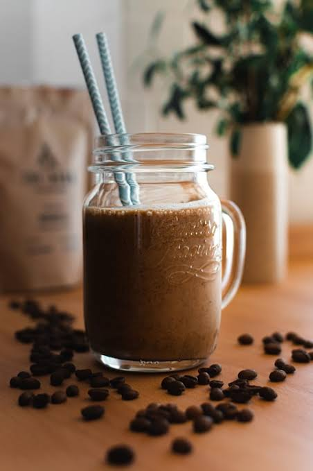

Batido de Proteína de Chocolate

El batido de proteína de chocolate es una bebida ideal para después del entrenamiento. Su combinación de proteína en polvo, leche y cacao ayuda a la recuperación muscular, aportando proteínas de alta calidad y un delicioso sabor a chocolate.